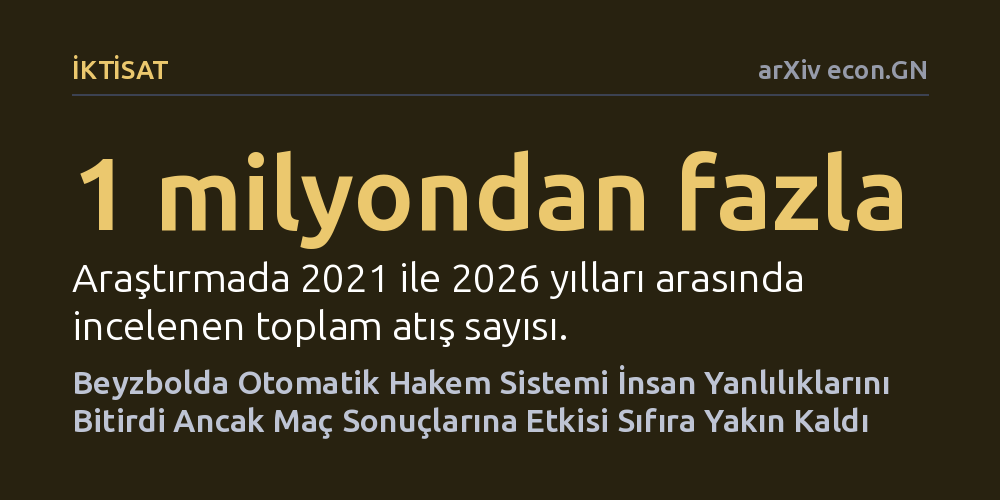

IKTISAT · arXiv econ.GN · 2026-10-22
Kore Beyzbol Ligi'ndeki bir milyondan fazla atışı inceleyen çalışma, otomatik hakem sisteminin insan inisiyatifini kaldırmasının etkilerini araştırdı. Sistem yıldız oyuncu avantajı ve yakalayıcı manipülasyonunu bitirip atıcıları yukarı yöneltse de maç sonuçlarına genel etkisi sıfıra yakın kaldı.
İnsan takdirinin yerine algoritmik kuralların getirilmesinin adaleti sağlasa bile nihai sonuçları ve güç dengelerini her zaman kökten değiştirmeyeceğini gösteriyor.

Gündelik hayatta ve sporda kritik kararları insan inisiyatifine mi bırakmalıyız, yoksa katı kurallarla işleyen algoritmik sistemlere mi? İnsan hakemler yorulur, baskı altında kalır, skora veya oyuncunun şöhretine göre taraflı kararlar verebilir. Makineler ise duygulardan arınmış, her duruma aynı kuralı uygulayan bir adalet anlayışı vaat eder. Ancak insan esnekliğini tamamen ortadan kaldırıp yerine katı bir cetvel koyduğumuzda, bu durumdan gerçekte kimlerin kazançlı çıktığı ve oyunun dengelerinin nasıl değiştiği yanıt bekleyen temel bir sorudur.
Kore Beyzbol Organizasyonu (KBO), 2024 yılında en üst düzey profesyonel ligler arasında bir ilke imza atarak atışların geçerli sayılıp sayılmayacağını belirleme yetkisini insan hakemlerden aldı ve otomatik bir sisteme devretti. Bu hamle, sporda teknoloji kullanımının ötesinde, insan inisiyatifinin yerini kural tabanlı bir mekanizmaya bırakmasının ekonomik ve davranışsal sonuçlarını doğrudan sahada gözlemlemek için eşsiz bir zemin oluşturdu.
Araştırmacılar, 2021 ile 2026 yılları arasındaki maçlarda gerçekleşen bir milyondan fazla atışı içeren kapsamlı bir veri kümesini mercek altına aldı. Bu veri seti, hem insan hakemlerin görev yaptığı dönemi hem de otomatik sisteme geçiş sonrasını kapsayarak doğrudan karşılaştırma yapmayı mümkün kıldı.
Analizin yöntemsel gücü, sistem değişimini iki ayrı bileşene ayırabilmesinden geliyor. Yazarlar, insan hakemlerin takdir yetkisinin kaldırılmasının etkileri ile otomatik sistemin getirdiği yeni geometrik vuruş alanı sınırlarının etkilerini birbirinden istatistiksel olarak ayrıştırdı. Böylece hem kişisel yanlılıkların silinmesi hem de kuralların cetvelle çizilmiş yeni sınırları bağımsız olarak ölçülebildi.
Makinelerin devreye girmesiyle insan hakemlere özgü kökleşmiş yanlılıklar anında ortadan kalktı. Maçın o anki skoruna ya da atış sayısına göre değişen kararlar, yıldız vuruculara tanınan ufak toleranslar ve tecrübeli yakalayıcıların topu ustaca yakalayarak hakemi yanıltma becerisi tamamen değerini yitirdi. Ancak hesaplamalar, bu ayrıcalıkların oyuncu ve sezon başına sadece birkaç koşuluk küçük bir avantaj yarattığını ortaya koydu.
Otomatik sistem vuruş alanını her oyuncunun boyuna göre matematiksel olarak ölçeklendirdiği için geçerli vuruşlar uzun boylu oyunculara doğru yeniden dağıldı. Bu yeni geometriye atıcılar çok hızlı uyum sağlayarak atışlarını daha yukarı bölgelere yöneltti; özellikle solak atıcılar mevcut eğilimi hızla yakaladı. Buna karşılık, vurucuların bu yeni düzene karşı davranışsal bir uyum geliştirdiğine dair hiçbir kanıt bulunamadı.
Tüm bu kural değişimine, sıfırlanan ayrıcalıklara ve atıcıların değişen taktiklerine rağmen, maçların vuruş sırası sonuçlarına olan net etkinin sıfıra son derece yakın olduğu hassas biçimde hesaplandı. Çünkü sahadaki atışların yalnızca çok küçük bir bölümü bu sınır değişikliklerinden doğrudan etkilendi; oyunun büyük kısmı eski doğal akışını korudu.
Bu çalışma, insan muhakemesinin yerini katı bir kurala bırakmasının etkilerinin sanıldığı gibi otomatik bir sarsıntı yaratmayacağını gösteriyor. İktisadi ve pratik etki, kuralın getirdiği yeni geometrinin sınırlarına ve insanların bu sınırlara gerçekte ne kadar maruz kaldığına bağlı kalıyor.